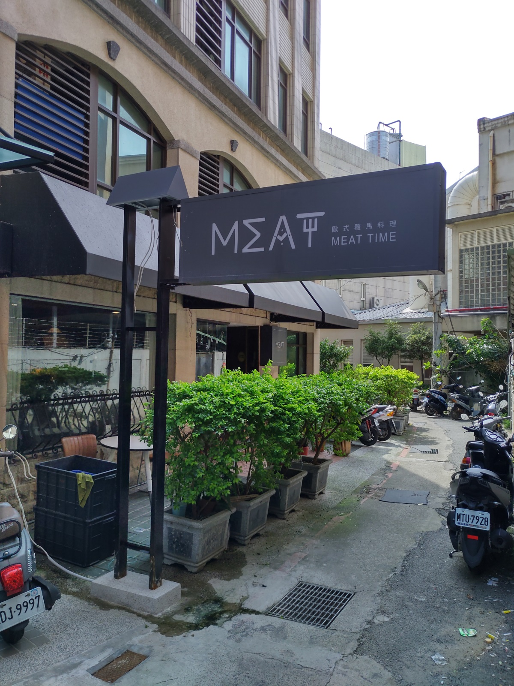
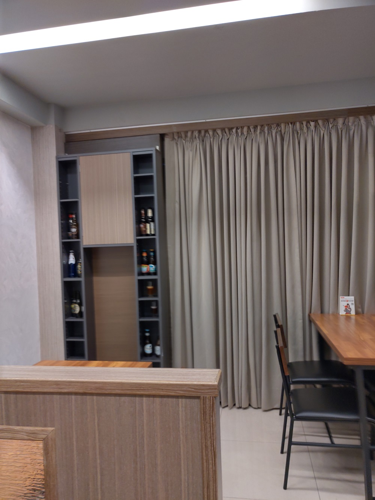
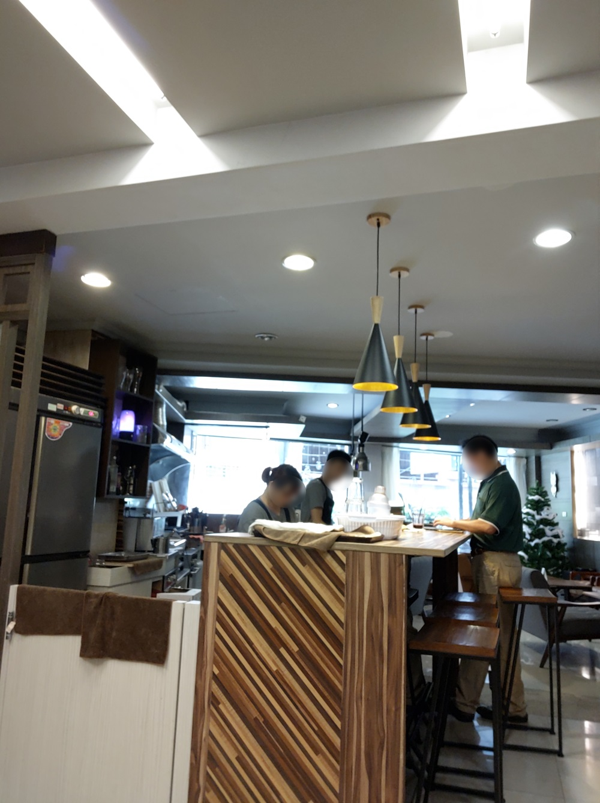
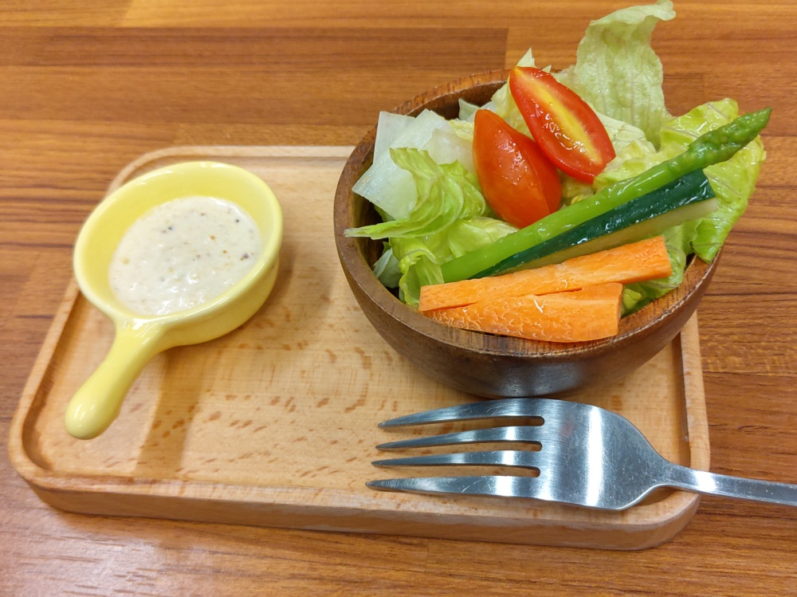
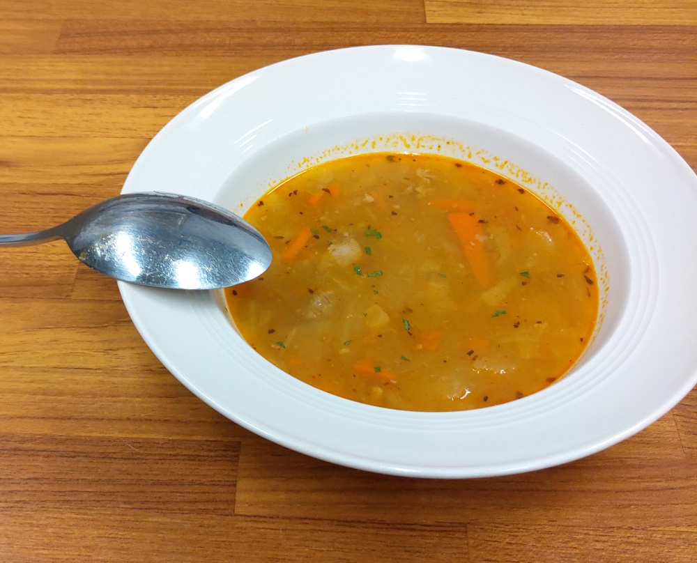
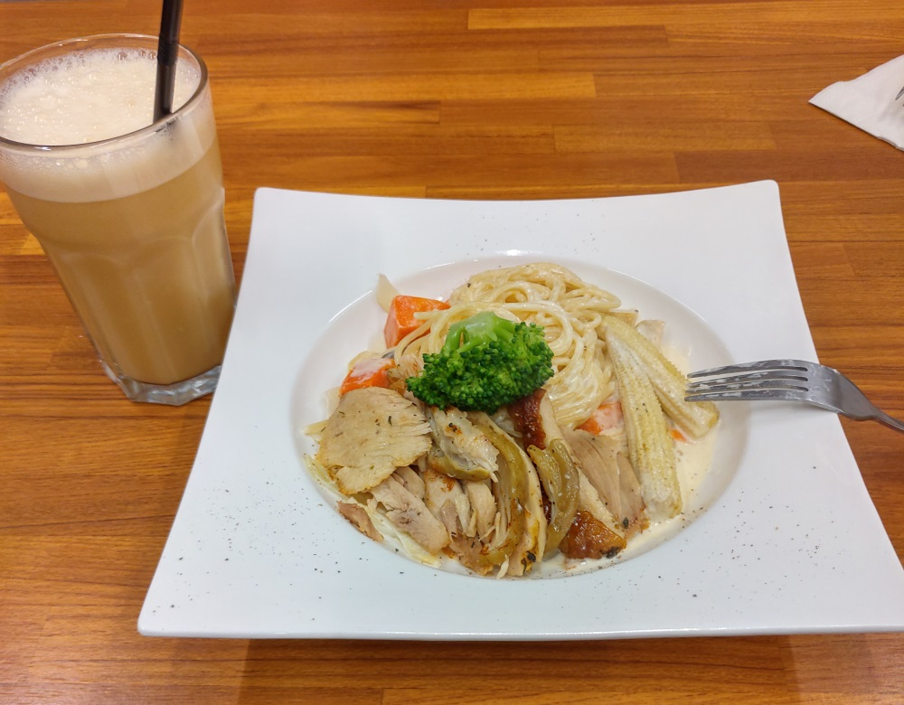
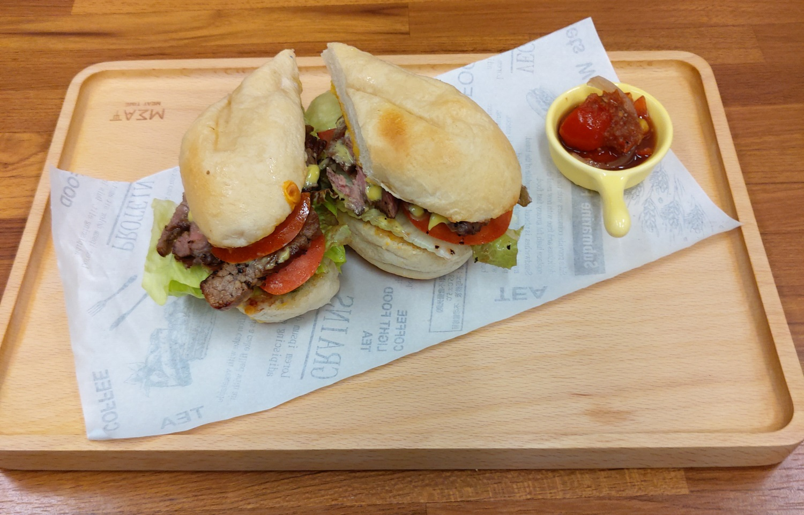

[新竹] MEAT TIME 歐式羅馬料理
來新竹辦點事，已經下午兩點了，北大路中正路這邊意外地不好停車。 本來還以為這種時段，應該很多人吃飽走了，最後去府後停車場， 雖然客滿，但離場的車也很踴躍，排隊了10來分鐘，終於可以停了。
停好車後，用Google Map 搜尋評分高的餐廳，找到這一間下午有營業，分數又不錯的餐廳 -
餐廳名稱: MEAT TIME 歐式羅馬料理
地 址: 新竹市東區東門街112巷8號
東門街112巷原來是文昌雞旁邊的小巷子，真是隱密啊， 
室內裝潢還不錯，  
下午兩點，我們竟然是店裡唯一的一組客人。 白醬烤雞肉義大利麵 加 B套餐，也就是湯跟飲料。先上沙拉。 
今天的附湯，算牛肉清湯吧。味道也還可以。 
白醬烤雞肉義大利麵，雞肉確實是烤的，時間花很久，烤的香氣也有出來，白醬義大利麵部分很正常。 
烤牛肉三明治吧，用料很大方，這點很好，味道也不錯。但是時間花更多，義大利麵吃完了，這道菜才上來。 
整個過程，服務非常親切，沒什麼好挑剔的。就是做菜非常久，久到快受不了。服務生希望我們去 Google 留下好評，下次可以打九折，唉，原來我就是這樣被影響來的，服務態度這麼好，我也不忍留負評，也確實 有些優點，只是被上菜時間抵銷的差不多了。罷了，罷了，還是祝福這間店，改善上菜速度，食物繼續 加強，整個台灣有很多專業義大利菜餐廳，至少台灣去年有4間得到義大利紅蝦評鑑認證，應該很容易參考， 希望他們繼續提升品質賺大錢。